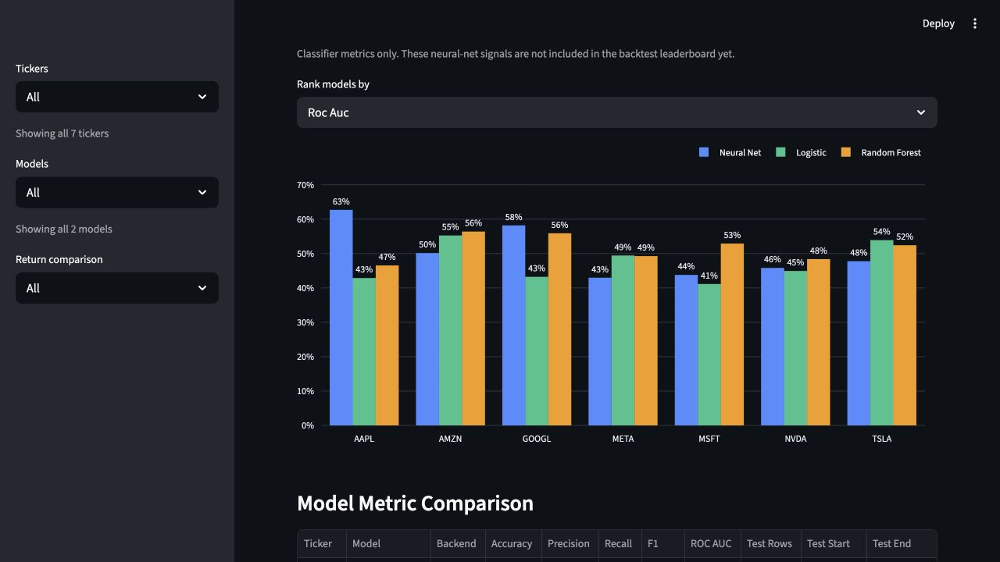

MarketPulse AI
An educational machine-learning laboratory built to practice feature engineering, train different model families, and compare how they behave on the same real-world dataset.

Why I built it
The primary purpose of MarketPulse AI was to experiment with building machine-learning models. Market data provides a noisy, difficult dataset where logistic regression, random forests, and a dense neural network can be trained against the same target and compared with the same metrics. The stock-signal question gives the experiments structure; learning how the models behave is the actual goal.
Pipeline
- Download and validate adjusted historical price and volume data for seven equities and SPY.
- Engineer return, volatility, moving-average, volume, RSI, and MACD features.
- Create a five-day forward-outperformance target relative to the benchmark.
- Compare logistic regression, random forest, and dense neural-network models.
- Run time-aware backtests with transaction costs and decision-threshold sweeps.
- Save machine-readable reports, figures, and dashboard-ready summaries.
From market data to a model signal
Each model receives the same engineered feature set and learns its own way to estimate five-day outperformance versus SPY. The diagram shows the shared experiment flow; it does not represent fitted coefficients or feature-importance values.
MarketPulse model workflow
Engineered features
- Returns
- Volatility
- Moving averages
- Volume
- RSI
- MACD
Features are scaled where the model requires it.
Model-specific weights
Probability → decision
Threshold sweeps turn scores into candidate decisions. Time-aware backtests then compare results with transaction costs.
Metrics · reports · dashboardWhat the experiment showed
The goal wasn’t to make money. I built this project to practice working with machine learning: engineering features, training different models, and learning how to evaluate their results.
A completed batch run compared a dense neural network across seven equities against SPY. It produced useful evidence about how model scores and simulated portfolio outcomes can diverge.
Equities evaluated with a five-day horizon and time-ordered test data.
Simulated strategy return exceeded SPY buy-and-hold at the 0.50 threshold.
Outcomes varied by ticker; the signal did not win consistently.
Across the seven neural-network test runs at the 0.50 decision threshold.
241 test observations per ticker; the model retrained on time-ordered data.
These are historical backtest results with 5 basis points of transaction costs and SPY as the fallback allocation. The near-random average ROC AUC and mixed ticker outcomes show that profitable-looking simulations did not establish a dependable predictive edge.
Engineering choices
Reproducible modules
Data, features, models, evaluation, and application code are separated into a package with command-line entry points.
Honest chronology
Training and evaluation preserve time order so later observations cannot leak into earlier predictions.
Multiple baselines
Neural results are compared with interpretable classical models rather than presented in isolation.
Verifiable output
Automated tests cover feature construction and backtest behavior; runs produce JSON, CSV, and chart artifacts.
Current status
The working laboratory now supports batch experiments, three model families, neural threshold sweeps, classification-metric comparisons, report generation, and a Streamlit interface. It remains an educational model-building project, not a trading system or financial recommendation.